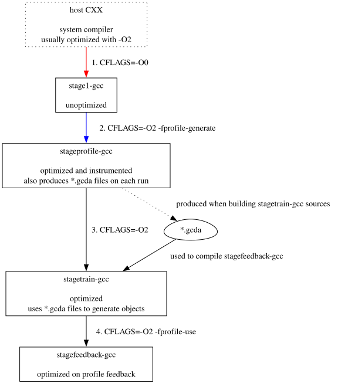
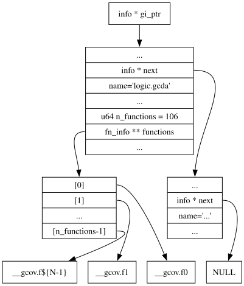

Another gcc profiling bug
The python PGO bug
About a year ago I had some
fun debugging gcc crash on python code base built in PGO mode
(optimized based on profile-feedback from test run).
Scrolling through recent gcc bugs I noticed PR111559
"[14 regression] ICE when building Python with PGO" bug reported by
Sam James. It looked vaguely similar to the previous instance so I looked
in.
There python build of -fprofile-use stage was crashing gcc as:
$ gcc -c ... -fprofile-use -fprofile-correction ... -o Parser/parser.o Parser/parser.c
Parser/parser.c: In function 'simple_stmt_rule':
Parser/parser.c:1706:1: error: probability of edge 613->614 not initialized
1706 | simple_stmt_rule(Parser *p)
| ^~~~~~~~~~~~~~~~
Parser/parser.c:1706:1: error: probability of edge 615->621 not initialized
during IPA pass: inline
Parser/parser.c:1706:1: internal compiler error: verify_flow_info failed
0x55c9cced2153 verify_flow_info()
This error tells us what exactly is wrong in the control flow graph when
gcc crashes (as opposed to vague SIGSEGV).
Normally gcc is very forgiving to input garbage profile data you pass
to it. Worst case you should get badly optimized binary with correct
behavior. But in this case gcc complains about probabilities gcc
calculated itself. I did not see this error type before.
I wanted to have a closer look.
Reproducing
First thing I tried to reproduce gcc ICE following Sam's instructions.
I had to do two minor tweaks:
- set
--enable-checking=yesforgcc_debug - change
python3nixpkgspackage to usegcc_debug
Out of laziness I patched --enable-checking=yes into local checkout
and changed python3 dependency in development shell invocation. Both
tweaks are below:
gcc_debug patch:
--- a/pkgs/top-level/all-packages.nix
+++ b/pkgs/top-level/all-packages.nix
@@ -15893,5 +15893,6 @@ with pkgs;
- gcc_debug = lowPrio (wrapCC (gcc.cc.overrideAttrs {
+ gcc_debug = lowPrio (wrapCC (gcc.cc.overrideAttrs (oa: {
dontStrip = true;
- }));
+ configureFlags = oa.configureFlags ++ [ "--enable-checking=yes" ];
+ })));
Running the shell:
$ nix develop --impure --expr 'with import ./. {};
python3.overrideAttrs (oa: {
nativeBuildInputs = [ gcc_debug ] ++ oa.nativeBuildInputs;
})'
That gave me the interactive development shell with all the tools in the
PATH. Double-checking if the visible compiler looks like the patched
one:
$$ LANG=C gcc -v
...
Configured with: ../source/configure ... --enable-checking=yes ...
...
gcc version 14.0.0 99999999 (experimental) (GCC)
Looks good. Moving on to run reproducer as is:
$$ wget https://www.python.org/ftp/python/3.11.5/Python-3.11.5.tar.xz
$$ tar xf Python-3.11.5.tar.xz
$$ cd Python-3.11.5/
$$ ./configure --enable-optimizations
$$ make -j$(nproc)
After a minute or so make -j$(nproc) command failed as:
$$ make -j$(nproc)
...
gcc -c -Wsign-compare -DNDEBUG -g -fwrapv -O3 ...
...
Parser/parser.c: In function 'simple_stmt_rule':
Parser/parser.c:1620:1: error: probability of edge 159->160 not initialized
1620 | simple_stmt_rule(Parser *p)
| ^~~~~~~~~~~~~~~~
Parser/parser.c:1620:1: error: probability of edge 161->162 not initialized
Parser/parser.c:1620:1: error: probability of edge 162->171 not initialized
Parser/parser.c:1620:1: error: probability of edge 166->162 not initialized
Parser/parser.c:1620:1: error: probability of edge 169->170 not initialized
Parser/parser.c:1620:1: error: probability of edge 614->615 not initialized
Parser/parser.c:1620:1: error: probability of edge 616->622 not initialized
during IPA pass: inline
Parser/parser.c:1620:1: internal compiler error: verify_flow_info failed
0xacee3e verify_flow_info()
../../source/gcc/cfghooks.cc:287
0x104f73c checking_verify_flow_info()
../../source/gcc/cfghooks.h:214
0x104f73c cleanup_tree_cfg_noloop
../../source/gcc/tree-cfgcleanup.cc:1154
0x104f73c cleanup_tree_cfg(unsigned int)
../../source/gcc/tree-cfgcleanup.cc:1205
0xed541c execute_function_todo
../../source/gcc/passes.cc:2057
0xed58ce execute_todo
../../source/gcc/passes.cc:2142
0xed841f execute_one_ipa_transform_pass
../../source/gcc/passes.cc:2336
0xed841f execute_all_ipa_transforms(bool)
../../source/gcc/passes.cc:2396
0xb0b09d cgraph_node::expand()
../../source/gcc/cgraphunit.cc:1834
0xb0b09d cgraph_node::expand()
../../source/gcc/cgraphunit.cc:1794
0xb0bfc1 expand_all_functions
../../source/gcc/cgraphunit.cc:2000
0xb0bfc1 symbol_table::compile()
../../source/gcc/cgraphunit.cc:2398
0xb0f527 symbol_table::compile()
../../source/gcc/cgraphunit.cc:2311
0xb0f527 symbol_table::finalize_compilation_unit()
../../source/gcc/cgraphunit.cc:2583
Please submit a full bug report, with preprocessed source (by using -freport-bug).
Please include the complete backtrace with any bug report.
See <https://gcc.gnu.org/bugs/> for instructions.
Yay! Luckily gcc_debug crashed for me without any extra convincing.
And python build system helpfully printed exact command to rerun.
Reducing the input
Once I got the reproducer I attempted to minimize it with
cvise against preprocessed
Parser/parser.c file and it's parser.gcda file (-fprofile-use flag
looks it up and loads profiling data).
Creating the preprocessed file to simplify cvise command run:
$$ gcc -E -P ... -o Parser/parser.c.c Parser/parser.c
$$ mv Parser/parser.c.c Parser/parser.c
Making sure the failure did not go away (this time with only flags
needed to crash gcc_debug):
$$ gcc -c -O2 -fprofile-use -fprofile-correction -o Parser/parser.o Parser/parser.c
...
Parser/parser.c: In function 'simple_stmt_rule':
Parser/parser.c:10501:1: error: probability of edge 540->541 not initialized
10501 | simple_stmt_rule(Parser *p)
| ^~~~~~~~~~~~~~~~
Parser/parser.c:10501:1: error: probability of edge 542->548 not initialized
during IPA pass: inline
Parser/parser.c:10501:1: internal compiler error: verify_flow_info failed
0xacee3e verify_flow_info()
../../source/gcc/cfghooks.cc:287
...
The crash was still there. Now running cvise:
$$ cd Parser/
$$ cvise --command="mkdir Parser && cp parser.c $PWD/parser.gcda Parser/;
gcc -c -O2 -fprofile-use -fprofile-correction -o Parser/parser.o Parser/parser.c |&
grep 'verify_flow_info'" parser.c
...
Runtime: 387 seconds
Reduced test-cases:
...
Note: in the --command=... script I had to maintain Parser/
directory nesting in the test as .gcda files contain
directory part of the filepath.
This is the raw file produced by cvise:
typedef struct {
void **elements
} asdl_seq;
typedef struct {
int mark;
int arena;
int error_indicator;
int level
} Parser;
static *_loop1_104_rule(Parser *p) {
if (p->level++ == 6000) {
p->error_indicator = 1;
PyErr_NoMemory();
}
if (p->error_indicator) {
p->level--;
return 0;
}
int _mark = p->mark;
void **_children = PyMem_Malloc(sizeof(void *));
if (!_children) {
p->error_indicator = 1;
PyErr_NoMemory();
p->level--;
return 0;
}
long _children_capacity = 1, _n = 0;
if (p->error_indicator) {
p->level--;
return 0;
}
int *lambda_param_with_default_var;
while (lambda_param_with_default_var = lambda_param_with_default_rule(p)) {
if (_n == _children_capacity) {
_children_capacity *= 2;
void *_new_children =
PyMem_Realloc(_children, _children_capacity * sizeof(void *));
if (!_new_children) {
PyMem_Free(_children);
p->error_indicator = 1;
PyErr_NoMemory();
p->level--;
return 0;
}
_children = _new_children;
}
_children[_n++] = lambda_param_with_default_var;
_mark = p->mark;
}
p->mark = _mark;
if (_n == 0 || p->error_indicator) {
PyMem_Free(_children);
p->level--;
return 0;
}
asdl_seq *_seq = _Py_asdl_generic_seq_new(_n, p->arena);
if (!_seq) {
PyMem_Free(_children);
p->error_indicator = 1;
PyErr_NoMemory();
p->level--;
return 0;
}
for (int i = 0; i < _n; i++)
_seq->elements[i] = _children[i];
PyMem_Free(_children);
p->level--;
return _seq;
}
static *_loop1_106_rule(Parser *p) {
if (p->level++ == 6000) {
p->error_indicator = 1;
PyErr_NoMemory();
}
if (p->error_indicator) {
p->level--;
return 0;
}
int _mark = p->mark;
void **_children = PyMem_Malloc(sizeof(void *));
if (!_children) {
p->error_indicator = 1;
PyErr_NoMemory();
p->level--;
return 0;
}
long _children_capacity = 1, _n = 0;
if (p->error_indicator) {
p->level--;
return 0;
}
int *lambda_param_with_default_var;
while (lambda_param_with_default_var = lambda_param_with_default_rule(p)) {
if (_n == _children_capacity) {
_children_capacity *= 2;
void *_new_children =
PyMem_Realloc(_children, _children_capacity * sizeof(void *));
if (!_new_children) {
PyMem_Free(_children);
p->error_indicator = 1;
PyErr_NoMemory();
p->level--;
return 0;
}
_children = _new_children;
}
_children[_n++] = lambda_param_with_default_var;
_mark = p->mark;
}
p->mark = _mark;
if (_n == 0 || p->error_indicator) {
PyMem_Free(_children);
p->level--;
return 0;
}
asdl_seq *_seq = _Py_asdl_generic_seq_new(_n, p->arena);
if (!_seq) {
PyMem_Free(_children);
p->error_indicator = 1;
PyErr_NoMemory();
p->level--;
return 0;
}
for (int i = 0; i < _n; i++)
_seq->elements[i] = _children[i];
PyMem_Free(_children);
p->level--;
return _seq;
}
func_type_rule() { _loop1_104_rule(_loop1_106_rule); }
It's a big and messy file! But do not be afraid!
I checked first what gcc_debug tries to do with it when it optimizes
it to see if I could apply more optimizations manually. -fopt-info
flag to the rescue:
$$ LANG=C gcc -c -O2 -fprofile-use -fprofile-correction -o Parser/parser.o Parser/parser.c -fopt-info
...
Parser/parser.c:10:9: error: source locations for function '_loop1_104_rule' have changed, the profile data may be out of date [-Werror=coverage-mismatch]
...
Parser/parser.c:10:9: optimized: Semantic equality hit:_loop1_104_rule/0->_loop1_106_rule/1
Parser/parser.c:10:9: optimized: Assembler symbol names:_loop1_104_rule/0->_loop1_106_rule/1
Parser/parser.c:10:9: error: probability of edge 3->4 not initialized
Parser/parser.c:10:9: error: probability of edge 5->6 not initialized
Parser/parser.c:10:9: error: probability of edge 8->6 not initialized
Parser/parser.c:10:9: error: probability of edge 10->6 not initialized
Parser/parser.c:10:9: error: probability of edge 13->6 not initialized
Parser/parser.c:10:9: error: probability of edge 20->6 not initialized
during GIMPLE pass: fixup_cfg
Parser/parser.c:10:9: internal compiler error: verify_flow_info failed
...
There is literally one optimization: _loop1_104_rule() and
_loop1_106_rule() have identical implementation and are folded into a
single function.
I supplied main() function, stubbed out missing functions and managed
to get a source-only reproducer without the need for *.gcda files!
This allowed me running cvise on a .c file alone. Reducing it
further I got this beauty:
// $ cat bug.c
__attribute__((noipa)) static void edge(void) {}
int p = 0;
__attribute__((noinline))
static void rule1(void) { if (p) edge(); }
__attribute__((noinline))
static void rule1_same(void) { if (p) edge(); }
__attribute__((noipa)) int main(void) {
rule1();
rule1_same();
}
The above example still crashed as:
$ gcc -O2 -fprofile-generate bug.c -o b && ./b
$ gcc -O2 -fprofile-use -fprofile-correction bug.c -o b
bug.c: In function 'rule1':
bug.c:6:13: error: probability of edge 3->4 not initialized
6 | static void rule1(void) { if (p) edge(); }
| ^~~~~
during GIMPLE pass: fixup_cfg
bug.c:6:13: internal compiler error: verify_flow_info failed
It's a nice outcome of the reduction. I pasted it as the update to the bug hoping that somebody fixes it.
Looking at the failure mode
The reduced case looks like some kind of a trivial bug. Is it the only
thing that plagues python PGO build? I tried to get the idea if I
can somehow work around the failure and see if gcc_debug crashes
somewhere else as well.
Even before looking at the gcc code I knew quite a bit about the
failure: the identical code folding fails on a function most of which
bodies is not executed: if (p) is always false.
Before doing gcc bisection I looked at recent gcc commits.
commit "Check that passes do not forget to define profile"
added control flow graph verification against uninitialized branch
probabilities.
It was clearly the change that exposed problematic transformation. But
it did not change existing transformations. Thus, chances are it's not a
new problem: it only happens to be visible now. We need to find a place
where uninitialized probability gets emitted by gcc.
I added a few debugging statements into gcc and found that probability
corruption happens in ipa-icf pass (identical code folding pass). As
rule1() and rule1_same() have identical implementation then in
theory probabilities of both functions should sum up together (whatever
"sum" means for a complex call graph of a function).
To look at the specific probability values right before the corruption I
added the following debugging patch to gcc:
--- a/gcc/ipa-utils.cc
+++ b/gcc/ipa-utils.cc
@@ -642,14 +642,17 @@ ipa_merge_profiles (struct cgraph_node *dst,
else
{
for (i = 0; i < EDGE_COUNT (srcbb->succs); i++)
{
+ profile_count den = dstbb->count.ipa () + srccount.ipa ();
+ gcc_assert(den.nonzero_p());
+
edge srce = EDGE_SUCC (srcbb, i);
edge dste = EDGE_SUCC (dstbb, i);
dste->probability =
dste->probability * dstbb->count.ipa ().probability_in
(dstbb->count.ipa ()
+ srccount.ipa ())
+ srce->probability * srcbb->count.ipa ().probability_in
(dstbb->count.ipa ()
+ srccount.ipa ());
}
Here I extracted dstbb->count.ipa () + srccount.ipa () denominator to
a separate den variable and added assert that it should not be zero
(as probability_in() turns those into undefined values).
Making sure we get assertion trigger:
$ gcc/xgcc -Bgcc -O2 -fprofile-generate bug.c -o b && ./b
$ gcc/xgcc -Bgcc -O2 -fprofile-use bug.c -o b
during IPA pass: icf
bug.c:14:1: internal compiler error: in ipa_merge_profiles, at ipa-utils.cc:653
In gdb session I poked a bit at the actual values:
$ gdb --args gcc/cc1 -quiet -v -iprefix /tmp/gb/gcc/../lib/gcc/x86_64-pc-linux-gnu/14.0.0/ -isystem gcc/include -isystem gcc/include-fixed bug.c -quiet -dumpdir b- -dumpbase bug.c -dumpbase-ext .c -mtune=generic -march=x86-64 -O2 -version -fprofile-use -o /run/user/1000/ccnlNQ8W.s
(gdb) start
(gdb) break internal_error
(gdb) continue
Breakpoint 2, internal_error (gmsgid=gmsgid@entry=0x285290d "in %s, at %s:%d") at /home/slyfox/dev/git/gcc/gcc/diagnostic.cc:2151
(gdb) bt
#0 internal_error (gmsgid=gmsgid@entry=0x285290d "in %s, at %s:%d") at /home/slyfox/dev/git/gcc/gcc/diagnostic.cc:2151
#1 0x000000000093902c in fancy_abort (file=file@entry=0x22afa38 "/home/slyfox/dev/git/gcc/gcc/ipa-utils.cc", line=line@entry=653, function=function@entry=0x22af9c7 "ipa_merge_profiles")
at /home/slyfox/dev/git/gcc/gcc/diagnostic.cc:2268
#2 0x00000000007b6124 in ipa_merge_profiles (dst=dst@entry=0x7fffea01a330, src=src@entry=0x7fffea01a440, preserve_body=preserve_body@entry=false) at /home/slyfox/dev/git/gcc/gcc/ipa-utils.cc:653
#3 0x0000000001db302c in ipa_icf::sem_function::merge (this=0x2e407a0, alias_item=0x2e41060) at /home/slyfox/dev/git/gcc/gcc/ipa-icf.cc:1276
(gdb) fr 2
#2 0x00000000007b6124 in ipa_merge_profiles (dst=dst@entry=0x7fffea01a330, src=src@entry=0x7fffea01a440, preserve_body=preserve_body@entry=false)
at /home/slyfox/dev/git/gcc/gcc/ipa-utils.cc:653
653 gcc_assert(den.nonzero_p());
(gdb) call dstbb->count.debug()
0 (precise)
(gdb) call srccount.ipa ().debug()
0 (precise)
Here is the initial probability value we are about to overwrite:
(gdb) call dste->probability.debug()
always
I proposed the conservative fix by ignoring such updates that change
probability from "initialized" to "uninitialized" as an
"ipa-utils: avoid uninitialized probabilities on ICF [PR111559]" commit:
--- a/gcc/ipa-utils.cc
+++ b/gcc/ipa-utils.cc
@@ -651,13 +651,14 @@ ipa_merge_profiles (struct cgraph_node *dst,
{
edge srce = EDGE_SUCC (srcbb, i);
edge dste = EDGE_SUCC (dstbb, i);
- dste->probability =
- dste->probability * dstbb->count.ipa ().probability_in
- (dstbb->count.ipa ()
- + srccount.ipa ())
- + srce->probability * srcbb->count.ipa ().probability_in
- (dstbb->count.ipa ()
- + srccount.ipa ());
+ profile_count sum =
+ dstbb->count.ipa () + srccount.ipa ();
+ if (sum.nonzero_p ())
+ dste->probability =
+ dste->probability * dstbb->count.ipa ().probability_in
+ (sum)
+ + srce->probability * srcbb->count.ipa ().probability_in
+ (sum);
}
dstbb->count = dstbb->count.ipa () + srccount.ipa ();
}
It might not be the best fix as we discard the fact that branch was
never executed during the profile run. But at least we don't compromise
correctness.
This fixed the reduced example and the actual python PGO build for
me. Yay! That was easier than I expected.
A minor comment
All done?
All looked very well. The patch was not reviewed yet and master branch
was still exposed to this kind of failure. Franz Sirl
reported that the same problem is
likely happening on profiledbootstrap build:
../../gcc/c-family/c-attribs.cc:1369:1: error: probability of edge 3->4 not initialized
1369 | handle_noclone_attribute (tree *node, tree name,
| ^~~~~~~~~~~~~~~~~~~~~~~~
during IPA pass: inline
../../gcc/c-family/c-attribs.cc:1369:1: internal compiler error: verify_flow_info failed
0xa92b3e verify_flow_info()
../../gcc/cfghooks.cc:287
0xfde04c checking_verify_flow_info()
../../gcc/cfghooks.h:214
0xfde04c cleanup_tree_cfg_noloop
../../gcc/tree-cfgcleanup.cc:1154
0xfde04c cleanup_tree_cfg(unsigned int)
../../gcc/tree-cfgcleanup.cc:1205
0xe7b25c execute_function_todo
../../gcc/passes.cc:2057
0xe7b70e execute_todo
../../gcc/passes.cc:2142
0xe7e16f execute_one_ipa_transform_pass
../../gcc/passes.cc:2336
0xe7e16f execute_all_ipa_transforms(bool)
../../gcc/passes.cc:2396
0xacde5d cgraph_node::expand()
../../gcc/cgraphunit.cc:1834
0xacde5d cgraph_node::expand()
../../gcc/cgraphunit.cc:1794
0xacecec expand_all_functions
../../gcc/cgraphunit.cc:2000
0xacecec symbol_table::compile()
../../gcc/cgraphunit.cc:2398
0xad2197 symbol_table::compile()
../../gcc/cgraphunit.cc:2311
0xad2197 symbol_table::finalize_compilation_unit()
../../gcc/cgraphunit.cc:2583
Please submit a full bug report, with preprocessed source (by using -freport-bug).
There gcc own build is using profile feedback information. That made
sense: there is a big chance STL (or other gcc internals) produces
identical functions worth folding. And looking at the crash log in
Franz's case handle_noclone_attribute() was folded with something else.
Looking at the code around I found this bunch of helpers:
static tree
handle_noclone_attribute (tree *node, tree name,
tree ARG_UNUSED (args),
int ARG_UNUSED (flags), bool *no_add_attrs)
{
if (TREE_CODE (*node) != FUNCTION_DECL)
{
warning (OPT_Wattributes, "%qE attribute ignored", name);
*no_add_attrs = true;
}
return NULL_TREE;
}
static tree
handle_noicf_attribute (tree *node, tree name,
tree ARG_UNUSED (args),
int ARG_UNUSED (flags), bool *no_add_attrs)
{
if (TREE_CODE (*node) != FUNCTION_DECL)
{
warning (OPT_Wattributes, "%qE attribute ignored", name);
*no_add_attrs = true;
}
return NULL_TREE;
}
Both functions have identical implementations up to white space and local variable names. Looking at the manifestation of the crash I was pretty sure it's exactly the same merging issue. But in theory there might be a lot more places where we introduce undefined probabilities.
Building profiled gcc
I decided to build profiledbootstrap on x86_64 Just In Case. In
theory it's very simple. You just run two commands:
$ ~/dev/git/gcc/configure
$ make profiledbootstrap
The only change from a trivial vanilla build is the non-default
profiledbootstrap build target. I ran the above commands as is.
The build was very slow. Some .cc files took 15 minutes to compile.
It's longer than the whole --disable-bootstrap build on my machines
which takes around 8 minutes. I filed PR11619
for "'make profiledbootstrap' makes 10+ minutes on insn-recog.cc".
To get the idea why some individual compilations take up to 15 minutes
let's look at the anatomy of a make profiledbootstrap build:

Or if we put the picture in words:
stage1-gccis built using-O0by hostgcc(or other compiler). At this point we getgccof guaranteed feature set and configuration.stageprofile-gccis built using-O2 -fprofile-generateby unoptimizedstage1-gccstagetrain-gccis built using-O2bystageprofile-gccto produce.gcdafiles and to produce next compiler stagestagefeedbackis built using-O2 -fprofile-usebystagetrain-gccto produce final profile-optimized compiler.
All of [2.]-[3.]-[4.] added are faster than single [1.] as all of
them use -O2 option. And [1.] uses CFLAGS=-O0 by default.
The speed-up workaround was to build stage1-gcc with optimizations
(-O2 instead of default -O0). gcc build system provides
STAGE1_CFLAGS option for that. And while at it we will enable -ggdb3
instead of default -g option:
$ ~/dev/git/gcc/configure
$ make profiledbootstrap STAGE1_CFLAGS='-O2 -ggdb3' BOOT_CFLAGS='-O2 -ggdb3'
That made the build a lot faster for me.
The only problem is that build failed configuring stagetrain-gcc
(equivalent of stage3-gcc for non-profiled builds):
$ make profiledbootstrap
...
checking for uintptr_t... no
configure: error: uint64_t or int64_t not found
make[2]: *** [Makefile:4862: configure-stagetrain-gcc] Error 1
make[2]: Leaving directory '/tmp/gb'
make[1]: *** [Makefile:26749: stagetrain-bubble] Error 2
make[1]: Leaving directory '/tmp/gb'
make: *** [Makefile:26902: profiledbootstrap] Error 2
That's not good. It's certainly not the failure Franz saw. I switched over to exploring that bug instead.
Debugging stagetrain-gcc crash
I looked at gcc/config.log to check why uint64_t had problems:
configure:6937: /tmp/gb/./prev-gcc/xg++ -B/tmp/gb/./prev-gcc/ ...
internal compiler error: in diagnostic_report_diagnostic, at diagnostic.cc:1486
0x4418233 gcov_do_dump
gcc/libgcc/libgcov-driver.c:689
0x44198c3 __gcov_dump_one
gcc/libgcc/libgcov-driver.c:722
...
xg++: internal compiler error: Aborted signal terminated program cc1plus
That's a compiler crash in machinery related to profile counter dumping. Built compiler also crashes on simplest input:
$ touch a.c
$ prev-gcc/xg++ -Bprev-gcc -c a.c
...
internal compiler error: in diagnostic_report_diagnostic, at diagnostic.cc:1486
That makes it a bit easier to debug.
To improve debugging of intermediate stages and retain -ggdb3 flags in
all gcc build stages I also dropped -gtoggle from stage2-gcc.
Normally -gtoggle is used to compare stage2 and stage3 in vanilla
bootstrap to make sure added/removed -g options don't affect generated
executable code. But in our case it build with -g0 just the stage we
want to debug.
--- a/config/bootstrap-debug.mk
+++ b/config/bootstrap-debug.mk
@@ -11,2 +11,3 @@
-STAGE2_CFLAGS += -gtoggle
+#STAGE2_CFLAGS += -gtoggle
do-compare = $(SHELL) $(srcdir)/contrib/compare-debug $$f1 $$f2
And restarted gcc build after the change.
Back to our crash: gdb told me that SIGSEGV happened right at gcc
exit in global destructors:
Program received signal SIGSEGV, Segmentation fault.
0x0000000004424506 in gcov_do_dump (list=0x5c9c020, run_counted=0, mode=0) at /home/slyfox/dev/git/gcc/libgcc/libgcov-driver.c:689
689 for (unsigned i = 0; i < cinfo->num; i++)
(gdb) bt
#0 0x0000000004424506 in gcov_do_dump (list=0x5c9c020, run_counted=0, mode=0) at /home/slyfox/dev/git/gcc/libgcc/libgcov-driver.c:689
#1 0x00000000044245e5 in __gcov_dump_one (root=0x6c15be0 <__gcov_root>) at /home/slyfox/dev/git/gcc/libgcc/libgcov-driver.c:722
#2 0x0000000004424627 in __gcov_exit () at /home/slyfox/dev/git/gcc/libgcc/libgcov-driver.c:747
#3 0x00007ffff7fcb0e2 in _dl_call_fini (closure_map=closure_map@entry=0x7ffff7ffe2c0) at dl-call_fini.c:43
#4 0x00007ffff7fcee06 in _dl_fini () at dl-fini.c:114
#5 0x00007ffff79d1255 in __run_exit_handlers (status=0, listp=0x7ffff7b6d660 <__exit_funcs>, run_list_atexit=run_list_atexit@entry=true, run_dtors=run_dtors@entry=true) at exit.c:111
#6 0x00007ffff79d138e in __GI_exit (status=<optimized out>) at exit.c:141
#7 0x00007ffff79b9ad5 in __libc_start_call_main (main=main@entry=0xc63030 <main(int, char**)>, argc=argc@entry=21, argv=argv@entry=0x7fffffffad68) at ../sysdeps/nptl/libc_start_call_main.h:74
#8 0x00007ffff79b9b89 in __libc_start_main_impl (main=0xc63030 <main(int, char**)>, argc=21, argv=0x7fffffffad68, init=<optimized out>, fini=<optimized out>, rtld_fini=<optimized out>, stack_end=0x7fffffffad58)
at ../csu/libc-start.c:360
#9 0x0000000000c63d25 in _start ()
According to gdb the crash happens at cinfo->num dereference:
(gdb) list
684 for (unsigned f_ix = 0; (unsigned)f_ix != gi_ptr->n_functions; f_ix++)
685 {
686 const struct gcov_ctr_info *cinfo
687 = &gi_ptr->functions[f_ix]->ctrs[GCOV_COUNTER_ARCS];
688
689 for (unsigned i = 0; i < cinfo->num; i++)
690 if (run_max < cinfo->values[i])
691 run_max = cinfo->values[i];
692 }
693
Looking at the specifics some tables we dereference are NULL:
(gdb) p *gi_ptr
$1 = {version = 1110716448, next = 0x50b5500, stamp = 4280923493, checksum = 2709867717, filename = 0x44558dc "/tmp/gb/gcc/cp/logic.gcda", merge = {0x4421950 <__gcov_merge_add>, 0x0, 0x0, 0x0,
0x44219a0 <__gcov_merge_topn>, 0x0, 0x0, 0x4421be0 <__gcov_merge_time_profile>}, n_functions = 106, functions = 0x50b6480}:
(gdb) p f_ix
$6 = 0
(gdb) p gi_ptr->functions[f_ix]
$7 = (const gcov_fn_info * const) 0x0
You would think that it's just an unhandled case of NULL functions in
the table. At least that's what I thought initially. In reality it's not
the case.
The expected layout here is the following:
gi_ptris the pointer to the table of profiling counters per function for a module (usually for one.cfile, in our case it isgcc/cp/logic.cc).gi_ptr->n_functionsis thegi_ptr->functionsarray size with pointers to counters associated with each given function (multiple counters per function).
In pictures the layout should look this way:

gcc code generator never puts zeros into functions array. Each
__gcov.f<N> entry is itself an array of counters associated with a
single function f${N}.
Back to our crash: according to gdb session above somehow
functions[0] entry has NULL value. We have n_functions = 106
entries there. Let's peek at first 16 to get the idea if it has any
reasonable values:
(gdb) x/16a &gi_ptr->functions[f_ix]
0x50b6480: 0x0 0x0
0x50b6490: 0x50b8e80 <__gcov_._Z21ggc_cleared_vec_allocIP17subsumption_entryEPT_m> 0x50b8e20 <__gcov_._ZN10hash_tableI11atom_hasherLb0E11xcallocatorE26find_empty_slot_for_expandEj>
0x50b64a0: 0x50b8dc0 <__gcov_._ZN10hash_tableI18subsumption_hasherLb0E11xcallocatorE6expandEv> 0x50b8d60 <__gcov_._Z8finalizeI10hash_tableI18subsumption_hasherLb0E11xcallocatorEEvPv>
0x50b64b0: 0x50b8d00 <__gcov_._ZN10hash_tableI18subsumption_hasherLb0E11xcallocatorE6verifyERKP17subsumption_entryj> 0x50b8ca0 <__gcov_._ZNK10hash_tableI18subsumption_hasherLb0E11xcallocatorE13alloc_entriesEm>
0x50b64c0: 0x50b8c40 <__gcov_._ZNSt15__allocated_ptrISaISt10_List_nodeI6clauseEEED2Ev> 0x50b8be0 <__gcov_._ZNSt7__cxx114listI6clauseSaIS1_EE14_M_create_nodeIJRP9tree_nodeEEEPSt10_List_nodeIS1_EDpOT_>
0x50b64d0: 0x50b8b80 <__gcov_._ZNSt15__allocated_ptrISaISt10_List_nodeIP9tree_nodeEEED2Ev> 0x50b8b20 <__gcov_._Z21ggc_cleared_vec_allocIP9tree_nodeEPT_m>
0x50b64e0: 0x50b8ac0 <__gcov_._ZN10hash_tableI11atom_hasherLb0E11xcallocatorE6verifyERKP9tree_nodej> 0x50b8a60 <__gcov_._ZN10hash_tableI11atom_hasherLb0E11xcallocatorE6expandEv>
0x50b64f0: 0x50b8a00 <__gcov_._Z27hashtab_entry_note_pointersI18subsumption_hasherEvPvS1_PFvS1_S1_S1_ES1_> 0x50b89a0 <__gcov_._ZNK10hash_tableI18subsumption_hasherLb0E11xcallocatorE24check_complete_insertionEv>
Aha, the first two entries have unexpected NULL values. The rest of
them look as expected and are related to __gcov counters. Let's check
if first two NULL were always there or it's a later runtime
corruption.
We care about 0x50b6480 address specifically (the first that contains
unexpected 0x0). Let's look at the array values at the very gcc
start:
(gdb) start
The program being debugged has been started already.
Start it from the beginning? (y or n) y
Temporary breakpoint 1 at 0xc63030: file /home/slyfox/dev/git/gcc/gcc/main.cc, line 35.
Temporary breakpoint 1, main (argc=21, argv=0x7fffffffad68) at /home/slyfox/dev/git/gcc/gcc/main.cc:35
(gdb) x/16a 0x50b6480
0x50b6480: 0x50b8fc0 <__gcov_._ZN10hash_tableI18subsumption_hasherLb0E11xcallocatorE26find_empty_slot_for_expandEj> 0x50b8ee0 <__gcov_._ZN10hash_tableI18subsumption_hasherLb0E11xcallocatorED2Ev>
0x50b6490: 0x50b8e80 <__gcov_._Z21ggc_cleared_vec_allocIP17subsumption_entryEPT_m> 0x50b8e20 <__gcov_._ZN10hash_tableI11atom_hasherLb0E11xcallocatorE26find_empty_slot_for_expandEj>
0x50b64a0: 0x50b8dc0 <__gcov_._ZN10hash_tableI18subsumption_hasherLb0E11xcallocatorE6expandEv> 0x50b8d60 <__gcov_._Z8finalizeI10hash_tableI18subsumption_hasherLb0E11xcallocatorEEvPv>
0x50b64b0: 0x50b8d00 <__gcov_._ZN10hash_tableI18subsumption_hasherLb0E11xcallocatorE6verifyERKP17subsumption_entryj> 0x50b8ca0 <__gcov_._ZNK10hash_tableI18subsumption_hasherLb0E11xcallocatorE13alloc_entriesEm>
0x50b64c0: 0x50b8c40 <__gcov_._ZNSt15__allocated_ptrISaISt10_List_nodeI6clauseEEED2Ev> 0x50b8be0 <__gcov_._ZNSt7__cxx114listI6clauseSaIS1_EE14_M_create_nodeIJRP9tree_nodeEEEPSt10_List_nodeIS1_EDpOT_>
0x50b64d0: 0x50b8b80 <__gcov_._ZNSt15__allocated_ptrISaISt10_List_nodeIP9tree_nodeEEED2Ev> 0x50b8b20 <__gcov_._Z21ggc_cleared_vec_allocIP9tree_nodeEPT_m>
0x50b64e0: 0x50b8ac0 <__gcov_._ZN10hash_tableI11atom_hasherLb0E11xcallocatorE6verifyERKP9tree_nodej> 0x50b8a60 <__gcov_._ZN10hash_tableI11atom_hasherLb0E11xcallocatorE6expandEv>
0x50b64f0: 0x50b8a00 <__gcov_._Z27hashtab_entry_note_pointersI18subsumption_hasherEvPvS1_PFvS1_S1_S1_ES1_> 0x50b89a0 <__gcov_._ZNK10hash_tableI18subsumption_hasherLb0E11xcallocatorE24check_complete_insertionEv>
Compared to the previous output here we see that first two entries are
valid non-NULL counters for functions named:
$ c++filt _ZN10hash_tableI18subsumption_hasherLb0E11xcallocatorE26find_empty_slot_for_expandEj _ZN10hash_tableI18subsumption_hasherLb0E11xcallocatorED2Ev
hash_table<subsumption_hasher, false, xcallocator>::find_empty_slot_for_expand(unsigned int)
hash_table<subsumption_hasher, false, xcallocator>::~hash_table()
That means something corrupted first two entries a while after.
Let's catch the actual place where 0x0 clobber write happens using
gdb watch points:
(gdb) watch -l *(void**)0x50b6480
Hardware watchpoint 2: -location *(void**)0x50b6480
(gdb) continue
Old value = (void *) 0x50b8fc0 <__gcov_._ZN10hash_tableI18subsumption_hasherLb0E11xcallocatorE26find_empty_slot_for_expandEj>
New value = (void *) 0x50b8f00 <__gcov_._ZN10hash_tableI18subsumption_hasherLb0E11xcallocatorED2Ev+32>
__memset_avx2_unaligned_erms () at ../sysdeps/x86_64/multiarch/memset-vec-unaligned-erms.S:328
328 ../sysdeps/x86_64/multiarch/memset-vec-unaligned-erms.S: No such file or directory.
(gdb) bt
#0 __memset_avx2_unaligned_erms () at ../sysdeps/x86_64/multiarch/memset-vec-unaligned-erms.S:328
#1 0x0000000001930731 in ggc_common_finalize () at /home/slyfox/dev/git/gcc/gcc/ggc-common.cc:1312
#2 0x00000000020d2421 in toplev::finalize (this=this@entry=0x7fffffffac3e) at /home/slyfox/dev/git/gcc/gcc/toplev.cc:2354
#3 0x0000000000c630e5 in main (argc=<optimized out>, argv=0x7fffffffad68) at /home/slyfox/dev/git/gcc/gcc/main.cc:42
Got it! memset() call from ggc_common_finalize() does byte-by-byte
zeroing out of our entry!
GGC corruptor
We can peek at the specific location of the writer:
(gdb) frame 1
#1 0x0000000001930731 in ggc_common_finalize () at /home/slyfox/dev/git/gcc/gcc/ggc-common.cc:1312
1312 memset (rti->base, 0, rti->stride * rti->nelt);
(gdb) list
1307 for (rti = *rt; rti->base != NULL; rti++)
1308 memset (rti->base, 0, rti->stride * rti->nelt);
1309
1310 for (rt = gt_ggc_rtab; *rt; rt++)
1311 for (rti = *rt; rti->base != NULL; rti++)
1312 memset (rti->base, 0, rti->stride * rti->nelt);
1313
1314 for (rt = gt_pch_scalar_rtab; *rt; rt++)
1315 for (rti = *rt; rti->base != NULL; rti++)
1316 memset (rti->base, 0, rti->stride * rti->nelt);
ggc is related to memory managed by gcc
garbage collector
and to global counters related to pre-compiled headers.
ggc is completely unrelated to statically allocated gcov counters.
Specifically ggc should never touch function pointer area.
gt_ggc_rtab is a table to garbage collector root pointers for global
variables used by gcc. Those usually have fancy GTY(()) annotations
around the structs.
Let's figure out what value ggc tries to wipe out off our counter
metadata:
(gdb) p *rti
$15 = {
base = 0x50b5608 <ovl_op_info+8>,
nelt = 116,
stride = 32,
cb = 0x1477b30 <gt_ggc_m_S(void const*)>,
pchw = 0x20bd860 <gt_pch_n_S(void const*)>
}
It's one of the fields of ovl_op_info global array. ovl_op_info_t is
declared in gcc/cp/cp-tree.h:
struct GTY(()) ovl_op_info_t {
/* The IDENTIFIER_NODE for the operator. */
tree identifier;
/* The name of the operator. */
const char *name;
/* The mangled name of the operator. */
const char *mangled_name;
/* The (regular) tree code. */
enum tree_code tree_code : 16;
/* The (compressed) operator code. */
enum ovl_op_code ovl_op_code : 8;
/* The ovl_op_flags of the operator */
unsigned flags : 8;
};
/* Overloaded operator info indexed by ass_op_p & ovl_op_code. */
extern GTY(()) ovl_op_info_t ovl_op_info[2][OVL_OP_MAX];
Here ovl_op_info_t has 3 garbage collectable pointers:
identifiernamemangled_name
ovl_op_info+8 we saw above looks like a name if the pointers are
8-bytes long.
Let's find the table entry for our rti value:
(gdb) p *rt
$23 = (const ggc_root_tab * const) 0x4488340 <gt_ggc_r_gt_cp_tree_h>
(gdb) p rti - *rt
$24 = 5
(gdb) p (*rt)[rti - *rt]
$25 = {
base = 0x50b5608 <ovl_op_info+8>,
nelt = 116,
stride = 32,
cb = 0x1477b30 <gt_ggc_m_S(void const*)>,
pchw = 0x20bd860 <gt_pch_n_S(void const*)>
}
According to gdb session right above the table with our pointer
description should be named gt_ggc_r_gt_cp_tree_h and fifth element
(counting from 0) will be our element. The table definition hides in
generated prev-gcc/gt-cp-tree.h file:
EXPORTED_CONST struct ggc_root_tab gt_ggc_r_gt_cp_tree_h[] = {
{ /* 0: skipped for brevity */},
{ /* 1: skipped for brevity */},
{ /* 2: skipped for brevity */},
{ /* 3: skipped for brevity */},
{ // 4:
&ovl_op_info[0][0].identifier,
1 * (2) * (OVL_OP_MAX),
sizeof (ovl_op_info[0][0]),
>_ggc_mx_tree_node,
>_pch_nx_tree_node
},
{ // 5:
&ovl_op_info[0][0].name,
1 * (2) * (OVL_OP_MAX),
sizeof (ovl_op_info[0][0]),
(gt_pointer_walker) >_ggc_m_S,
(gt_pointer_walker) >_pch_n_S
},
{ // 6:
&ovl_op_info[0][0].mangled_name,
1 * (2) * (OVL_OP_MAX),
sizeof (ovl_op_info[0][0]),
(gt_pointer_walker) >_ggc_m_S,
(gt_pointer_walker) >_pch_n_S
},
// ...
The // 5: value confirms us that the entry points to name field of
the first element in the array. nelts = 1 * (2) * (OVL_OP_MAX) tells
us how many elements there are in the array and stride = sizeof (ovl_op_info[0][0]) tells us how many bytes there are to the beginning
of the next pointer. All look sensible.
But if we look again at how ggc_common_finalize() tries to wipe these
pointers out we might notice the problem:
1310 for (rt = gt_ggc_rtab; *rt; rt++)
1311 for (rti = *rt; rti->base != NULL; rti++)
1312 memset (rti->base, 0, rti->stride * rti->nelt);
Instead of wiping out the pointers it wipes out the whole structs. And
given that memset() starts at an offset 8 of the array it actually
gets out of bounds of the ovl_op_info for 8 bytes. And when // 6:
entry is wiped we'll get off-by-16 bytes memset().
These extra 16 bytes are exactly the corruption we see in our gcov
counters.
The fix was straightforward: zero out only pointers themselves, not the structs around them:
--- a/gcc/ggc-common.cc
+++ b/gcc/ggc-common.cc
@@ -75,6 +75,18 @@ ggc_mark_root_tab (const_ggc_root_tab_t rt)
(*rt->cb) (*(void **) ((char *)rt->base + rt->stride * i));
}
+/* Zero out all the roots in the table RT. */
+
+static void
+ggc_zero_rtab_roots (const_ggc_root_tab_t rt)
+{
+ size_t i;
+
+ for ( ; rt->base != NULL; rt++)
+ for (i = 0; i < rt->nelt; i++)
+ (*(void **) ((char *)rt->base + rt->stride * i)) = (void*)0;
+}
+
/* Iterate through all registered roots and mark each element. */
void
@@ -1307,8 +1319,7 @@ ggc_common_finalize ()
memset (rti->base, 0, rti->stride * rti->nelt);
for (rt = gt_ggc_rtab; *rt; rt++)
- for (rti = *rt; rti->base != NULL; rti++)
- memset (rti->base, 0, rti->stride * rti->nelt);
+ ggc_zero_rtab_roots (*rt);
for (rt = gt_pch_scalar_rtab; *rt; rt++)
for (rti = *rt; rti->base != NULL; rti++)
Andrew Pinkski mentioned that bootstrap-asan also detects
out-of-bounds access in https://gcc.gnu.org/PR111505 and I reproduced
it as:
$ ../gcc/configure --with-build-config=bootstrap-asan
$ make
The gcc fix fixed the bootstrap-asan for me. Yay!
C++, IFNDR and -fchecking=2
The ggc fix also allowed me to get past stagetrain-gcc build stage
for profiledbootstrap.
But make profiledbootstrap started failing on stagefeedback-gcc
stage (roughly stage4) as:
In file included from /home/slyfox/dev/git/gcc/gcc/coretypes.h:480,
from /home/slyfox/dev/git/gcc/gcc/rtl-tests.cc:22:
/home/slyfox/dev/git/gcc/gcc/poly-int.h: In instantiation of ‘constexpr poly_int<N, T>::poly_int(poly_int_full, const Cs& ...) [with Cs = {int, int}; unsigned int N = 1; C = long int]’:
/home/slyfox/dev/git/gcc/gcc/poly-int.h:439:13: required from here
/home/slyfox/dev/git/gcc/gcc/rtl-tests.cc:249:25: in ‘constexpr’ expansion of ‘poly_int<1, long int>(1, 1)’
/home/slyfox/dev/git/gcc/gcc/poly-int.h:453:5: error: too many initializers for ‘long int [1]’
453 | : coeffs { (typename poly_coeff_traits<C>::
| ^~~~~~~~~~~~~~~~~~~~~~~~~~~~~~~~~~~~~~~~~
454 | template init_cast<Cs>::type (cs))... } {}
| ~~~~~~~~~~~~~~~~~~~~~~~~~~~~~~~~~~~~~~~
make[3]: *** [Makefile:1188: rtl-tests.o] Error 1
That looked like a bug in c++ code of gcc. But why did it not fail
earlier when stage1-gcc or stageprofile were being built?
I filed https://gcc.gnu.org/PR111647 we confirmed it's a gcc source
code bug: gcc accepts slightly different c++ in -fhcecking=1 and
-fchecking=2 modes.
I extracted the following example out of gcc source code:
// $ cat rtl-tests.cc
template<unsigned int N> struct poly_int {
template<typename ...Cs> constexpr poly_int (const Cs &... cs)
: coeffs { cs... } {}
int coeffs[N];
};
#define TARGET_DEFINED_VALUE 1
// this works:
//#define TARGET_DEFINED_VALUE 2
// Is instantiated only for N == 2.
template<unsigned int N> struct const_poly_int_tests {
static void run () {
poly_int<TARGET_DEFINED_VALUE> (1, 1);
}
};
And this code compiles (or not) depending on compiler flags:
$ g++ -c rtl-tests.cc -fchecking=1
# did not fail, BAD!
$ g++ -c rtl-tests.cc -fchecking=2
rtl-tests.cc: In instantiation of 'constexpr poly_int<N>::poly_int(const Cs& ...) [with Cs = {int, int}; unsigned int N = 1]':
rtl-tests.cc:15:42: required from here
rtl-tests.cc:3:5: error: too many initializers for 'int [1]'
3 | : coeffs { cs... } {}
| ^~~~~~~~~~~~~~~~
# failed, GOOD
$ clang++ -c rtl-tests.cc
rtl-tests.cc:3:14: error: excess elements in array initializer
: coeffs { cs... } {}
^~
rtl-tests.cc:15:5: note: in instantiation of function template specialization 'poly_int<1>::poly_int<int, int>' requested here
poly_int<TARGET_DEFINED_VALUE> (1, 1);
^
1 error generated.
# failed, GOOD
From there I learned that IFNDR
means "Ill-Formed, No Diagnostic Required". Which I would characterize
as allowed Undefined Behavior of the C++ type checker: it might or
might not detect a bug in the C++ and that's fine to be a conforming
application.
And the fix
was simple:
--- a/gcc/rtl-tests.cc
+++ b/gcc/rtl-tests.cc
@@ -246,6 +246,7 @@ template<unsigned int N>
void
const_poly_int_tests<N>::run ()
{
+ using poly_int64 = poly_int<N, HOST_WIDE_INT>;
rtx x1 = gen_int_mode (poly_int64 (1, 1), QImode);
rtx x255 = gen_int_mode (poly_int64 (1, 255), QImode);
--- a/gcc/simplify-rtx.cc
+++ b/gcc/simplify-rtx.cc
@@ -8689,6 +8689,7 @@ template<unsigned int N>
void
simplify_const_poly_int_tests<N>::run ()
{
+ using poly_int64 = poly_int<N, HOST_WIDE_INT>;
rtx x1 = gen_int_mode (poly_int64 (1, 1), QImode);
rtx x2 = gen_int_mode (poly_int64 (-80, 127), QImode);
rtx x3 = gen_int_mode (poly_int64 (-79, -128), QImode);
Here poly_int64 is made dependent on N parameter and compiler is
happy not to check dependent types as long as those are not
instantiated.
The use case of bootstrap4
But why did default build of gcc not fail for everyone? There are a
few reasons to that. Let's look at the gcc bootstrap sequence once
more. But this time from standpoint of -fchecking= option.
The default value of -fchecking= is defined by gcc/configure.ac:
AC_ARG_ENABLE(checking,
[AS_HELP_STRING([[--enable-checking[=LIST]]],
[enable expensive run-time checks. With LIST,
enable only specific categories of checks.
Categories are: yes,no,all,none,release.
Flags are: assert,df,extra,fold,gc,gcac,gimple,misc,
rtlflag,rtl,runtime,tree,valgrind,types])],
[ac_checking_flags="${enableval}"],[
# Determine the default checks.
if test x$is_release = x ; then
ac_checking_flags=yes,extra
else
ac_checking_flags=release
fi])
The above sets --enable-checking=release to gcc releases (which
defaults to -fchecking=0). A development gcc versions sets
--enable-checking=yes,extra which defaults to -fchecking=2.
But that is not all. gcc build system does the following CFLAGS
overrides:
stage1-gccgets built with default host's compiler flagsstage2-gcc/stageprofileis built with-fno-checkingstage3-gcc/stagetrainis built with-fchecking=1stage4-gcc/stagefeedbackis build with defaultstage3-gccflags
This means we have a few ways to build gcc with -fchecking=2 and
get the failure:
- In
stage1-gcc: your host compiler must be a--enable-checking=yes,extra. Not all distributions ship the compiler with extra checks (mine does not). - In
stage4-gcc(or instagefeedback): your built compiler is a--enable-checking=yes,extraand you are building 4-stage compiler.
I was hitting the latter [2.] case. Once I realized that I tried
bootstrap4:
$ ../gcc/configure
$ make bootstrap4
That allowed me to verify that stage4 was the trigger. And once I
applied Roger's patch make profiledbootstrap managed to build
stagetrain!
To get stagefeedback built I needed one
extra patch
to disable -Werror for stagefeedback
--- a/Makefile.tpl
+++ b/Makefile.tpl
@@ -561,6 +561,10 @@ STAGEtrain_TFLAGS = $(filter-out -fchecking=1,$(STAGE3_TFLAGS))
STAGEfeedback_CFLAGS = $(STAGE4_CFLAGS) -fprofile-use -fprofile-reproducible=parallel-runs
STAGEfeedback_TFLAGS = $(STAGE4_TFLAGS)
+# Disable warnings as errors for a few reasons:
+# - sources for gen* binaries do not have .gcda files available
+# - inlining decisions generate extra warnings
+STAGEfeedback_CONFIGURE_FLAGS = $(filter-out --enable-werror-always,$(STAGE_CONFIGURE_FLAGS))
STAGEautoprofile_CFLAGS = $(filter-out -gtoggle,$(STAGE2_CFLAGS)) -g
STAGEautoprofile_TFLAGS = $(STAGE2_TFLAGS)
Otherwise, build from master fails for missing profile data for
binaries that not compiler by profile-generating compiler:
gcc/gcc/sort.cc: In function ‘void reorder45(sort_ctx*, char*, char*, char*, char*, char*) [with sort_ctx = sort_r_ctx]’:
gcc/gcc/sort.cc:313:1: error: ‘gcc/build/sort.gcda’ profile count data file not found [-Werror=missing-profile]
And after that make profiledbootstrap built without any snags. And
make check did not show any regressions.
--disable-werror was a reasonable workaround as well for
-Werror-related failures.
make bootstrap4 strikes again
All done?
I was using --enable-checking=release for a while to work around
IFNDR-related failures in profiledbootstrap.
After it was fixed I tried make bootstrap4 on default
--enable-checking=yes,extra. And it failed as:
$ ../gcc/configure --disable-multilib --enable-languages=c,c++ CC='gcc -O2' CXX='g++ -O2'
$ make bootstrap4
...
Comparing stages 3 and 4
Bootstrap comparison failure!
x86_64-pc-linux-gnu/libstdc++-v3/src/filesystem/dir.o differs
x86_64-pc-linux-gnu/libstdc++-v3/src/filesystem/cow-dir.o differs
x86_64-pc-linux-gnu/libstdc++-v3/src/c++20/tzdb.o differs
x86_64-pc-linux-gnu/libstdc++-v3/src/c++17/cow-fs_path.o differs
x86_64-pc-linux-gnu/libstdc++-v3/src/c++17/fs_path.o differs
x86_64-pc-linux-gnu/libstdc++-v3/src/c++17/cow-fs_dir.o differs
x86_64-pc-linux-gnu/libstdc++-v3/src/c++17/fs_dir.o differs
This was a case where -fchecking=2 caused slightly different code
generated with -fchecking=1 and -fchecking=2. I filed
PR111663 to clarify if it's an expected
outcome of -fchecking=2 or we should fix gcc code generation.
The following seems to be enough to expose unstable code generation:
// $ cat fs_dir.cc.cc
namespace std {
struct type_info {
void operator==(const type_info &) const;
};
struct _Sp_counted_base {
virtual void _M_get_deleter(const type_info &);
};
struct _Sp_make_shared_tag {};
template <typename> struct _Sp_counted_ptr_inplace : _Sp_counted_base {
struct _Impl {
_Impl(int);
};
_Sp_counted_ptr_inplace(int __a) : _M_impl(__a) {}
void _M_get_deleter(const type_info &__ti) {
__ti == typeid(_Sp_make_shared_tag);
}
_Impl _M_impl;
};
struct __shared_count {
__shared_count() { _Sp_counted_ptr_inplace<int>(0); }
} _M_refcount;
} // namespace std
Triggering:
$ g++ -frandom-seed=fs_dir.lo -c fs_dir.cc.cc -fchecking=2 -o bug.o
$ sha1sum bug.o
92d676d60ee6e26e9b242fb64bffe9e47a92052a bug.o
$ /g++ -frandom-seed=fs_dir.lo -c fs_dir.cc.cc -fchecking=2 -o bug.o -fchecking=1
$ sha1sum bug.o
748b578657a335c212872b012b2afaf0be3ecbc4 bug.o
Parting words
What looked like a simple PGO bug uncovered quite a list of adjacent
gcc bugs in less exercised areas on gcc itself:
PR111559:"[14 regression] ICE when building Python with PGO". Fixed.PR111619:"'make profiledbootstrap' makes 10+ minutes on insn-recog.cc". Not fixed yet.PR111629:"[14 Regression] ggc_common_finalize() corrupts global memory outsuide GTY(()) objects". Fixed.PR111642:"[14 Regression] bootstrap4 or profiledbootstrap failure: poly-int.h:453:5: error: too many initializers". Fixed.PR111647:"g++ accepts different c++ on -fchecking= anf checking=2". Not fixed yet.PR111653:"make bootstrap4 fails for -fchecking=2 code generation changes"Not fixed yet.
At least I managed to drag the PGO bug itself to completion.
python keeps breaking gcc PGO machinery.
cvise is still great at reducing source files (and even .gcda files!).
I learned a few tricks how to effectively debug gcc crashes with gdb
like make STAGE1_CFLAGS='-O2 -ggdb3' BOOT_CFLAGS='-O2 -ggdb3' and
dropping -gtoggle.
make profiledbootstrap seemingly never worked when ran with default
./configure options against master branch of gcc. But now it should!
make bootstrap4 is another rarely exercised and yet very useful sanity
check of gcc options like -fchecking=2 and code generation
stability. It does not quite works yet, but we are almost there.
gcc has it's own garbage collector subsystem able to track pointers
in structs marked with GTY(()) attribute.
IFNDR is a C++ word for allowed undefined result of type checker:
IFNDR code might or might not be compiled successfully and both
outcomes will be valid.
-fchecking=2 not just changes c++ gcc understands but also changes
the way gcc generates code. Both are bugs, but are scary ones.
Have fun!